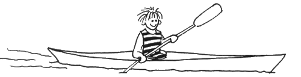
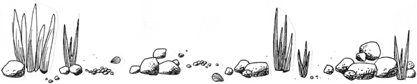

|
|
 Teckning: Ulla Randén Vår kajak-sida Vi började paddla 1986 med en enkel tvåmanskajak. Sedan har vi haft VKV Lisa, två stycken, och två olika Caribou. I garaget får det inte plats någon bil utan det är fyllt av kajaker, både köpta och hembyggda. Idag har vi en Caribou havskajak, en Trapper Baltic och en VKV Yoo-A-Kim, en kajak för hela familjen. Dessutom har vi en hembyggd enmans trä-kajak. Kajaken byggde Björn efter inspiration från en artikel i tidningen Wooden Boat om Chesapeake Light Craft.
Massor av länkar till andra intressanta kajak-sidor hittar du via: |

|
|
Teckning: Ulla Randén
Uppdaterad av Kerstin Forsberg 26 July 2003 |